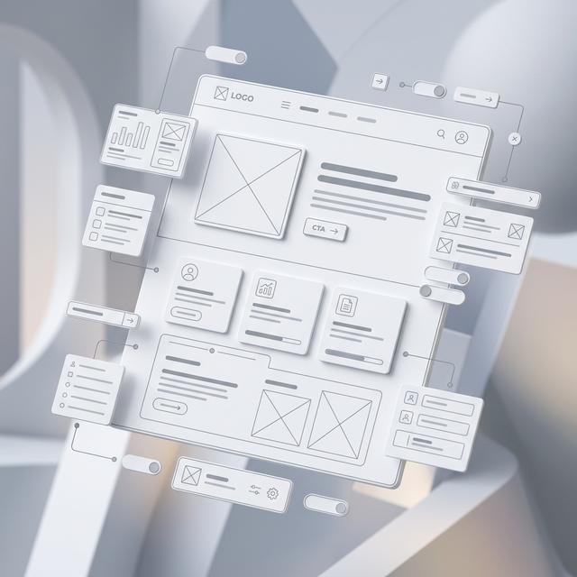

從 Wireframe 到 Mockup
雖然 Wireframe、Mockup 和 Prototype 常常被混淆，但它們有著本質的區別。
當你在 Wireframe 中加入 色彩、圖片與具體的設計風格 時，它就不再只是 Wireframe，而是成為了 Mockup（視覺模型）。
「Wireframe 關注功能與結構，Mockup 關注感覺與視覺，Prototype 關注動作與交互。」
Wireframe (骨架)

Mockup (視覺)

Wireframe（線框圖）是網站或應用程式的低保真視覺指南。它主要用於規劃頁面的佈局、結構與內容安排，而不涉及具體的視覺細節（如顏色、圖片或字體）。
簡單來說，它是產品的「骨架」。
從草圖到精細原型的演進過程
快速草圖或簡單的方框圖。主要用於快速測試構思和佈局。這也是我們通常提到 "Wireframe" 時所指的意思。
包含更具體的 UI 元素和真實的文字內容。結構更清晰，比例更精確，但仍排除裝飾性細節。
極其接近最終產品。包含了精確的間距、排版與網格系統。常用於最終測試與開發交付。
雖然 Wireframe、Mockup 和 Prototype 常常被混淆，但它們有著本質的區別。
當你在 Wireframe 中加入 色彩、圖片與具體的設計風格 時，它就不再只是 Wireframe，而是成為了 Mockup（視覺模型）。
「Wireframe 關注功能與結構，Mockup 關注感覺與視覺，Prototype 關注動作與交互。」
Wireframe (骨架)
Mockup (視覺)
Wireframe 是設計過程中的核心工具，它幫助團隊在耗費資源進行細節設計之前，優先解決最重要的「結構」與「流程」問題。
通常提到 Wireframe，大多數指的都是「低真度」版本。
一旦填入顏色與細節，它就進化成了 Mockup。